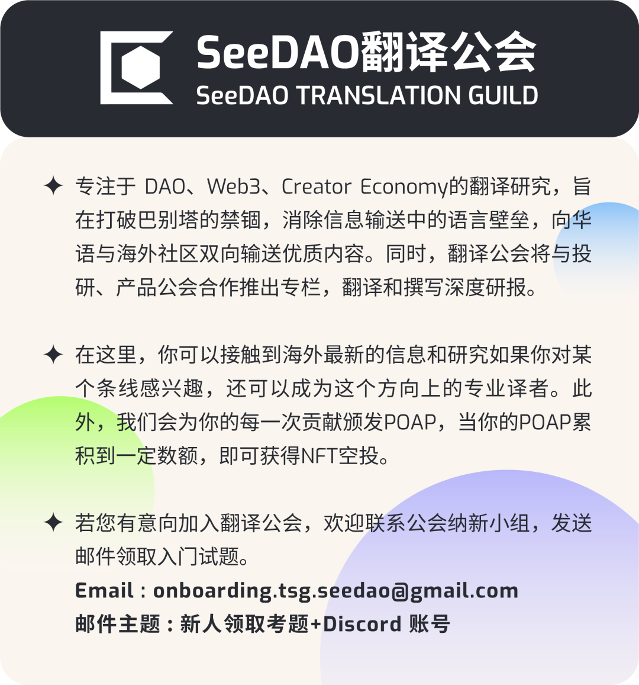

作者｜Stephen Graves
译者|鹿鹭路
校对|Shawna
排版|In
审核|Bo
「点击底部“阅读原文”即可跳转原文链接」
随着熊市的到来，加密货币项目正在放弃像 NFT 和 Web3 这样的术语。以下是品牌专家认为它们应该如何应对这一困境。
这是一项不敢言其名的技术。
你是否在 Reddit 或 Instagram 上寻找 NFT？你将更容易地在这些平台上找到“数字收藏品”而不是 NFT。还记得区块链曾经一度引起轰动吗？比特币挖矿公司曾以 Riot Blockchain 为名，最近将自己重新定位为 Riot Platforms。世界经济论坛的区块链和数字资产负责人 Brynly Llyr 甚至建议整个加密领域以“去中心化系统”为中心进行全面品牌重塑。
NBA全明星巴伦·戴维斯（Baron Davis）表示，这段时间以来，我们绝对不想称它们为 NFT 。他的照片和视频版权管理平台 SLiC Images 避免提及有争议的技术。
加密货币以及与之相关的行话现在已成为有害的词汇。曾经，仅将“区块链”一词加到你的名称中就可以增加公司的估值，但现在，加密货币、Web3、NFT 以及其他能让人联想到勇敢新世界的流行词汇，用查理·芒格的话说，都成了老鼠药。
甚至词汇“元宇宙”——原本用来定义去中心化网络的终极演进——也被马克·扎克伯格调用，试图将Facebook转型（结果有些不尽人意）。
趋势情报公司 Stylus 的零售主管凯蒂·巴伦认为，尽管加密货币仍是 "对非传统投资抱有明显警惕的年轻一代 "的首选，但该行业需要“谨慎的重新关注”。
图片来源：opensea
她补充说：“我确实认为这些术语已经变得有点有害，特别是加密货币和 NFT，部分原因是最初的狂热宣传被描绘成与一个崭新的极度民主化世界同义，每个人都可以通过投资或制作数字资产大赚一笔。”
广告公司奥美创新服务全球负责人迪肯·劳斯认为，"加密货币" 和 "Web3" 等术语之所以成为毒药，不仅是因为该领域存在不良行为者，还因为 "产品与市场的契合度太低"。
他说："没有人让 Web3 与大众相联系或让大众可以访问 Web3，也没有人真正花时间去了解 Web3 如何解决'大众'市场的问题或改善消费者的生活。”
劳斯表示，过去几年的加密货币“淘金热”之所以未能赢得大众的青睐，是因为它未能解决那些“你的邻居、家人和朋友、健身伙伴、遛狗时遇到的人们能够理解和关联的问题。
劳斯说，品牌和企业 "在投资时没有按照惯例进行尽职调查"，这意味着他们没有制定长期计划来支持对区块链技术的投资，这使问题变得更加复杂。"因此，虽然'世界第一'的头条新闻层出不穷，但他们并没有向利益相关者说明他们的钱花在了什么地方，以及产生了什么影响，这意味着增长和持续投资--好钱变坏钱--是一个非常棘手的问题。"
尤其是 NFT，当它们没有被嘲笑为环境危害时（后来以太坊改用权益证明后，NFT 的问题得到了解决），它们被与那些围绕加密货币的更不光彩的快速致富骗局联系在一起。
国家地理在社交媒体上受到广泛批评后放弃了其 NFT 计划，而游戏行业则在粉丝们持续不断的反对声中挣扎，《虫虫危机》和《S.T.A.L.K.E.R.2》等游戏的发行商被迫放弃将 NFT 纳入游戏的计划。
到目前为止，将 NFT 改名为 "数字收藏品" 这一做法似乎取得了成功；数百万 Reddit 用户抢购了他们的 "收藏品头像"。
NFT 巴黎会议的创始人亚历山大·齐登科夫表示：“每个人都说‘数字收藏品’有用，它是比 NFT 起到更好的品牌宣传吗？我不知道。”
齐登科夫补充说：“每六个月人们都会找到一个新词汇。NFT 过去曾风光无限，现在是元宇宙。但现在 Facebook 正将自己的品牌重新塑造为 Meta ，所以我们需要改变。”他认为，在试图将 NFT 重塑为其他品牌之前，加密货币领域需要等待 "事态平静下来，也许 NFT 可以在人们不了解 NFT 是什么的情况下成为主流"。
那么，所有加密货币公司是否都应该考虑重塑品牌形象，避免在名称中使用可能令人反感的词语呢？
凯蒂·巴伦认为绝对值得考虑：“我建议要么将其放入[公司的]其他交流中，要么删除它。许多最引人注目的元宇宙建设公司不包括它 —— 看看 Journee 或 AnamXR。尤其是区块链 —— 以共享的不可变分类帐为基础命名一家公司有点不吸引人！”
然而，游戏行业中的一些大公司对这些反对声音置之不理，继续前进；NFT游戏《Blankos Block Party》最近在 Epic Games Store 上推出，而《最终幻想》的发行商 Square Enix 则对其采用区块链技术表现坚定，于 2023 年 2 月在 Polygon 区块链上推出了基于区块链的 NFT 游戏《Symbiogenesis》。
《刺客信条》的发行商 Ubisoft 正在加大区块链投资，并且没有停止的迹象。就在本周，Ubisoft 在元宇宙游戏《The Sandbox》中推出了其备受欢迎的“疯狂兔子”系列的 NFT。Ubisoft 的区块链技术总监 Didier Genevois 在 2021 年的一次采访中表示：“我们理解人们对这项技术的负面情绪产生的原因，我们需要在每一步的推进中考虑这些因素。”
他将公司的区块链推动描述为一项实验，旨在“了解去中心化的价值主张如何被我们的玩家接受和拥抱”。
从长远来看，The Future Laboratory 的联合创始人马丁·雷蒙德称，我们所谓的技术终将不会重要。
“我怀疑我们目前看到的许多反应只是对新事物的偏见，”雷蒙德说。“我认为这在每一次创新周期或技术周期中都会发生；如果你回顾一下生物技术，第一次出现时它被视为弗兰肯斯坦的怪物，而下一次出现可能是在拯救地球。”
图片来源：维基百科
Gartner Hype Cycle 是一种常用的衡量新技术采用情况的方法。
雷蒙德认为，Web3所使用的术语不一定需要重新定名。他表示：“我认为它们只需要去除负面印象。” 这是那些使用这项技术的倡导者、报道这项技术的记者以及试图利用这项技术的金融和银行业共同的任务。
劳斯表示赞同。“对普通人来说，Web3 就像 ‘HTML’ 这个术语一样”他说。“这是一项至关重要的技术演进，但我们是否需要知道 Web3 的含义呢？就像大多数人是否需要知道 HTML 的含义一样。”
用户不关心一个工具是应用、去中心化应用程序（dapp）、NFT、智能合同还是物联网系统。
“他们关心的是它带来的好处”，他说。
